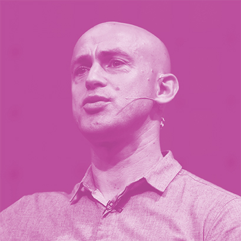
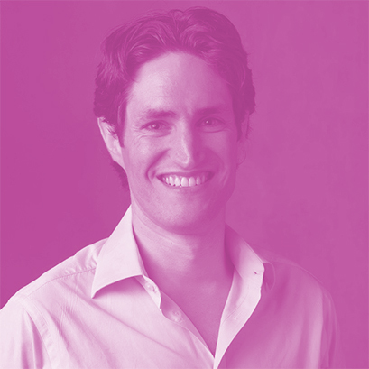
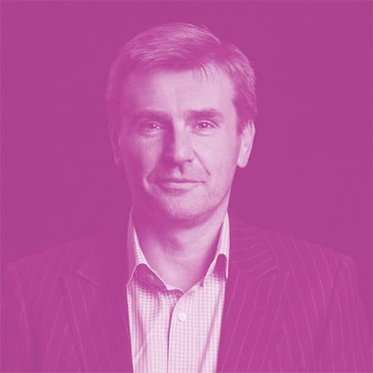

와 제 롤모델이 잡스에요!!! 아이폰 첫 출시되고 나서부터 계속 아이폰 쓰고 있는데 잡스가 너무 그리워요ㅠㅠ 지금은 돈만 벌려고 하는 것 같아서 디자인 발전도 없고ㅠㅠ와 제 롤모델이 잡스에요!!! 아이폰 첫 출시되고 나서부터 계속 아이폰 쓰고 있는데 잡스가 너무 그리워요ㅠㅠ 지금은 돈만 벌려고 하는 것 같아서 디자인 발전도 없고ㅠㅠ와 제 롤모델이 잡스에요!!! 아이폰 첫 출시되고 나서부터 계속 아이폰 쓰고 있는데 잡스가 너무 그리워요ㅠㅠ 지금은 돈만 벌려고 하는 것 같아서 디자인 발전도 없고ㅠㅠ와 제 롤모델이 잡스에요!!! 아이폰 첫 출시되고 나서부터 계속 아이폰 쓰고 있는데 잡스가 너무 그리워요ㅠㅠ 지금은 돈만 벌려고 하는 것 같아서 디자인 발전도 없고ㅠㅠ와 제 롤모델이 잡스에요!!! 아이폰 첫 출시되고 나서부터 계속 아이폰 쓰고 있는데 잡스가 너무 그리워요ㅠㅠ 지금은 돈만 벌려고 하는 것 같아서 디자인 발전도 없고ㅠㅠ
TED
당신의 삶을 더
풍요롭게 만드는 TED
TED는 미국의 비영리 재단으로 ‘널리 퍼져야 할 아이디어(Ideas worth spreading)’를 모토로 기술, 교육, 정치, 사회, 예술 등 다양한 주제로 강연회를 개최하고 있다. <바다소리>는 매달 다른 주제의 강연 동영상을 소개한다.
바쁜 세상 속에서 살아가고 있는, 휴식이 필요한 당신에게 필요한 영상을 준비했다. 휴식을 어떤 시각으로 바라봐야 할지, 또 일과 삶의 균형을 어떻게 맞춰야 할지 등에 대한 귀중한 통찰을 안겨주는 짧은 영상을 만나보자.
글
편집실
-

Andy
Puddicombe우리에게 필요한 10분의 시간
앤디 퍼디컴 _ 명상가
마지막으로 10분 동안 아무것도 하지 않고 있던 때가 언제인가? 바쁜 세상 속을 살아가는 사람이라면, 정말 아무것도 하지 않은 채 10분을 보내는 것은 힘든 일이다. 우리는 마음으로 삶의 매 순간을 경험하며, 의존하며, 집중하고, 창의적인 생각을 한다. 하지만 우리는 이런 마음을 돌보기 위한 시간은 전혀 투자하지 않는다. 자동차, 옷, 머리 등을 가꾸는 데에 많은 시간을 할애하는데 말이다.
결과적으로 보면 마음을 가꾸지 않은 사람은 당연하게 스트레스를 받게 된다. ‘지금 이 순간’에 마음이 생각에 빠져 헤매지 않으려면, 하루 10분을 투자해 ‘명상’하는 시간을 가져보자. 명상은 생각을 없애는 것이 아닌, 한발 뒤로 물러서서 생각을 조금 더 명확하게 보는 것이다. 앤디 퍼디컴이 제안하는 명상의 방법을 통해 ‘알아차림’을 배울 때, 늘 보이는 대로가 아닌 다른 것을 보게 될지도 모른다. -

Adam Alter
전자기기와 행복의 상관관계
애덤 알터 _ 심리학자
뉴욕대학에서 심리학을 가르치는 애덤 알터는 지난 2007년, 2015년, 2017년의 변화를 단순한 그래프로 보여준다. 2007년은 아이폰이 세상에 처음 나온 해. 그때나 10년이 지난 시점이나 잠자는 시간과 일하는 시간은 크게 달라지지 않았다. 유일하게 급증하 건 스마트폰을 보는 시간. 덕분에 2007년에도 많지 않았던 여유 시간, 즉 삶의 의미를 돌아보고 미래를 생각해보는 여백의 시간은 정말 눈곱만큼의 크기로 줄어들었다.
우리가 스마트폰을 사용하는 동안 무슨 일이 벌어지고 있을까? 실험 결과, 사람들은 사용하고 나면 기분이 좋아지는 스마트폰 앱과 반대로 기분이 나빠지는 앱 중 후자의 앱을 사용하는 데 18분이라는 시간을 더 많이 쓰고 있었다. 우리를 덜 행복하게 하는 앱에 더 많은 시간을 쓰는 스마트폰에는 일종의 ‘정지 신호’가 없기 때문이 아닐까. -

Nigel Marsh
어떻게 일과 삶의 균형을 맞추는가
나이젤 마쉬 _ 작가 겸 마케터
나이젤 마쉬는 많은 사람이 일과 생활의 균형에 대하여 헛소리를 하고 있다고 말한다. 나이젤 마쉬는 흔히 생각하는 회사의 복지나 유연근무제, 출산휴가 등에 대한 논의하는 것은 일과 삶의 균형을 파괴하는 본질을 감출 뿐이며, 이 본질을 먼저 파악하는 것이 핵심이라고 말한다. 또한 자신의 삶의 균형을 회사에 맡기는 것은 위험하고 무책임한 일이기에 스스로 해법을 찾아야 한다고 말한다.
의외로 해법은 가깝고 작은 것에 있다. 균형을 이루는 것은 인생에서 극적인 변화를 의미하지 않는다. 나이젤 마쉬가 제안하는 네 가지 방법은 최소한의 투자로 삶의 질을 바꿀 수 있다고 한다. 어쩌면 이로 인해 개인이 변하고 사회가 바뀐다면, 사회적 ‘성공’의 정의도 바뀔 수도 있을 것이다. 죽을 때 가장 많은 돈을 가진 사람이 승자라는 바보스러운 단순한 개념이 아닌 ‘삶의 균형을 이룬 사람’이라는 정의로 말이다.
-
최고예요
322
-
좋아요
322
-
슬퍼요
322
-
그저 그래요
322
-
화나요
322